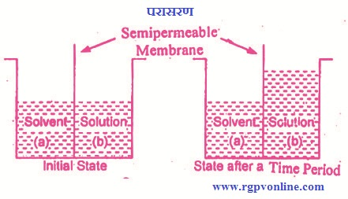
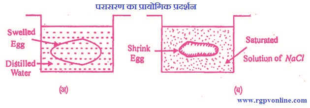
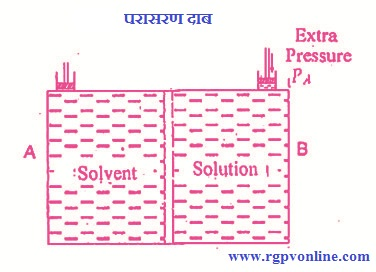

Q.15 : परासरण दाब क्या है ?
उत्तर- परासरण - जब किसी विलयन तथा विलायक को अर्द्धपारगम्य (semi permeable) झिल्ली द्वारा पृथक करते हैं तो विलायक के अणु अर्द्धपारगम्य झिल्ली से निकलकर विलयन में पहुँच जाते हैं तथा दोनों ओर की सान्द्रता बराबर हो जाती है। अतः "कम सान्द्रता वाले: विलयन में से विलायक के अर्द्धपारगम्य झिल्ली में से होकर उच्च सान्द्रता वाले विलयन में होने वाले स्वतः प्रवाह (spontaneous flow) को परासरण (osmosis) कहते हैं।"

चित्र 15.1 परासरण
परासरण का प्रयोग- परासरण के प्रायोगिक प्रदर्शन हेतु दो अण्डे लेते हैं जिनका बाहरी आवरण तनु हाइड्रोक्लोरिक अम्ल में डालकर हटा दिया जाता है। यदि एक को नमक (सोडियम क्लोराइड, NaCI) के संतृप्त घोल में तथा दूसरे को आसुत जल में डाला जाये तो कुछ घण्टों के पश्चात् नमक में डाला गया अण्डा सिकुड़ जाता है तथा आसुत जल में डाला गया अण्डा फूल जाता है।

चित्र 15.2 परासरण का प्रायोगिक प्रदर्शन
ऐसा परासरण के कारण ही होता है, क्योंकि इनका छिलका अर्थात् कोशिका भित्ति (cell wall) एक अर्द्धपारगम्य झिल्ली की तरह कार्य करती है, जिसमें से शुद्ध विलायक के अणु गुजर सकते हैं। अतः परासरण के कारण कोशिकाओं में विलायक (जल) के अपहुँच जाते हैं जिससे आसुत जल में रखे हुए अण्डे का आकार बढ़ जाता है और नमक में रखा हुआ अण्डा सिकुड़ जाता है।
परासरण दाब - यदि किसी विलयन को विलायक से एक अर्द्धपारगम्य झिल्ली द्वारा अलग कर दिया जाये तो विलायक को विलयन में प्रवेश करने से रोकने तथा साम्यावस्था स्थापित करने के लिए विलयन पर जो न्यूनतम दाब आरोपित करना पड़ता है उसे विलयन का परासरण दाब (osmotic pressure) कहते हैं।
माना एक जल अवरुद्ध (water tight) पात्र को अर्द्धपारगम्य झिल्ली द्वारा A तथा B दो भागों में बाँट दिया गया है, जैसा कि चित्र 15.3 में दिखाया गया है। दोनों भागों में जल अवरुद्ध पिस्टन लगे हैं।

चित्र 15.3 परासरण दाब
एक भाग को विलयन से तथा दूसरे भाग को शुद्ध विलायक (जल) से भर दिया जाता। है। परासरण क्रिया के कारण दूसरे भाग से जल निकलकर अर्द्धपारगम्य झिल्ली को पार करके पहले भाग में प्रवेश करेगा, जिसके फलस्वरूप पिस्टन PA ऊपर की ओर चढ़ने लगेगा। इस पिस्टन के स्थानांतरण को रोकने के लिए हमें बाहर से इस पिस्टन पर दाब डालना पड़ेगा। इस पिस्टन पर आरोपित दाब के, विलयन के परासरण दाब के बराबर हो जाने पर अर्द्धपारगम्य झिल्ली से होकर जल का विलयन में गमन रुक जायेगा। पिस्टन पर आरोपित इसी दाब को परासरण दाब कहते हैं। परासरण दाब को निम्नलिखित प्रकार से भी परिभाषित कर सकते हैं -
"वह कम से कम दाब जिसे विलयन पर लगाने से उसका वाष्प-दाब विलायक के । वाष्प-दाब के बराबर हो जाता है, उस विलयन का परासरण दाब कहलाता है।"
विद्युत्-परासरण - जब परासरण की क्रिया विद्युत् क्षेत्र की उपस्थिति में सम्पन्न होती है तो इसे विद्युत्-परासरण (electro-osmosis) कहते हैं। जीव शरीर में जैविक झिल्लियों के दोनों ओर आयनों के असमान वितरण के कारण भी विद्युत् क्षेत्र उत्पन्न हो जाता है जिसके फलस्वरुप विद्युत्-परासरण की क्रिया होती है। रसायनों की पृथक्करण तकनीकों तथा कैपिलरी इलेक्ट्रोफोरेसिस में यह घटना अत्यंत महत्वपूर्ण होती है।
विद्युत्-परासरण की घटना विद्युत् क्षेत्र की उपरिथति में उत्पन्न कूलॉम के बल के कारण होती है। इसका उपयोग माइक्रोफ्लूडिक डिवाइस, मृदा परीक्षण, रसायन परीक्षण आदि में होता है।